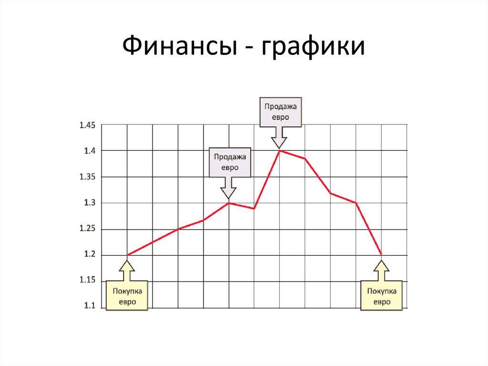
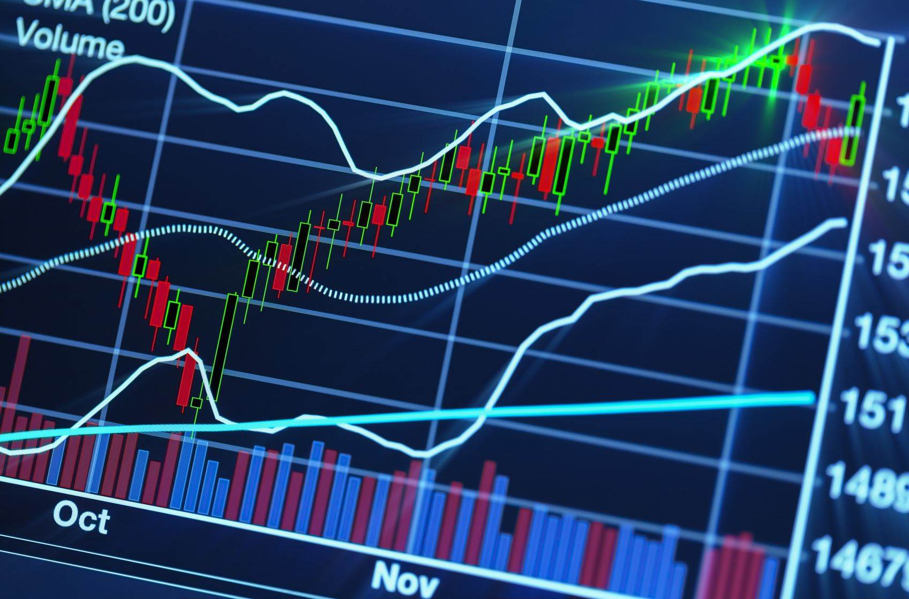

Аналитический контент
1. Как анализировать финансовые данные?
Анализ финансовых данных — это ключевой этап в принятии инвестиционных решений. Он включает изучение показателей, таких как прибыль, выручка, расходы и маржа. На основе этих данных можно прогнозировать будущие тенденции.
2. Показатели фондового рынка
Важнейшими показателями фондового рынка являются индексы (S&P 500, Dow Jones, NASDAQ) и акции ведущих компаний. Рост этих показателей свидетельствует об экономической стабильности и инвесторской уверенности.
3. Влияние глобальных событий на экономику
Экономические кризисы, геополитические события и изменения в сырьевых рынках оказывают значительное влияние на глобальные финансы. Инвесторам необходимо оперативно реагировать на эти события.